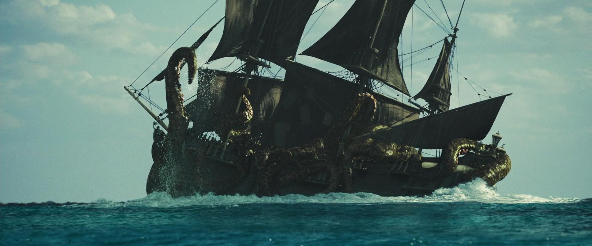
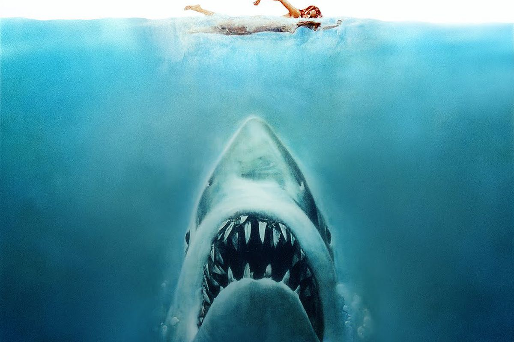
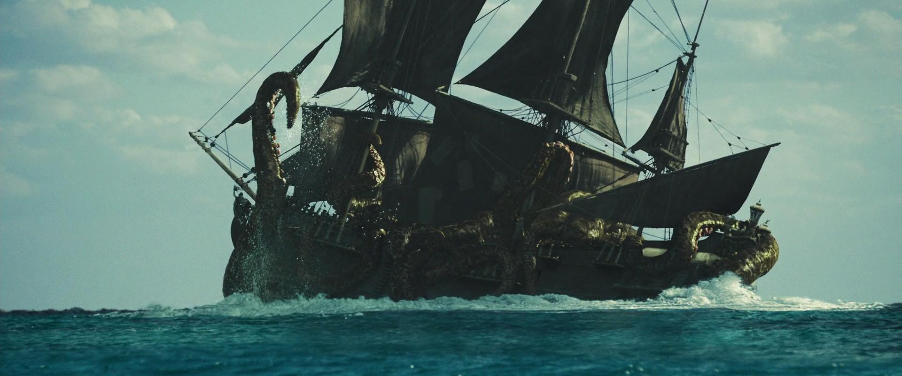
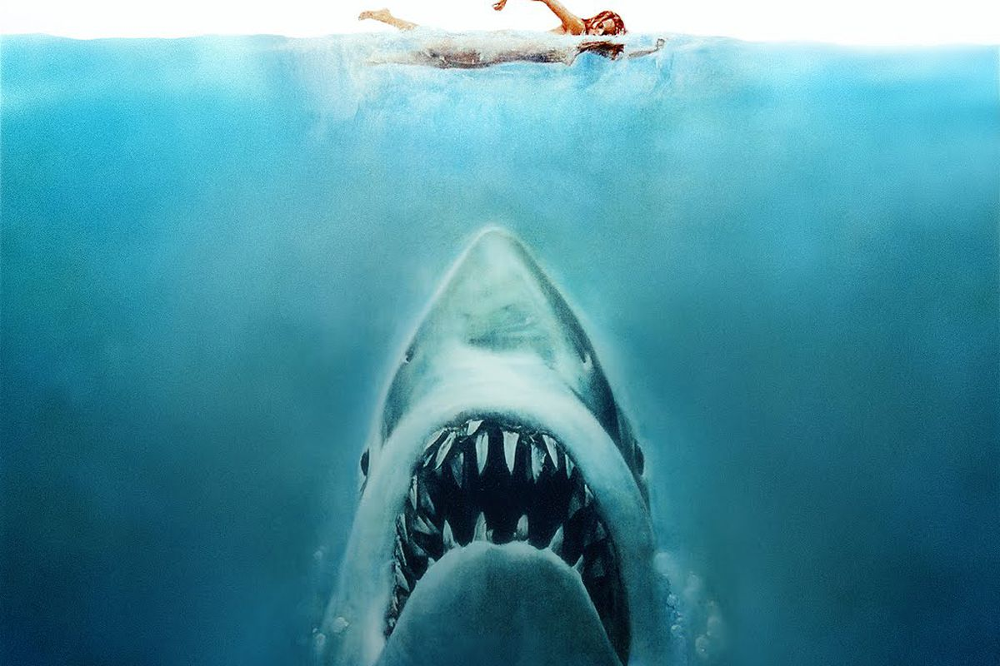
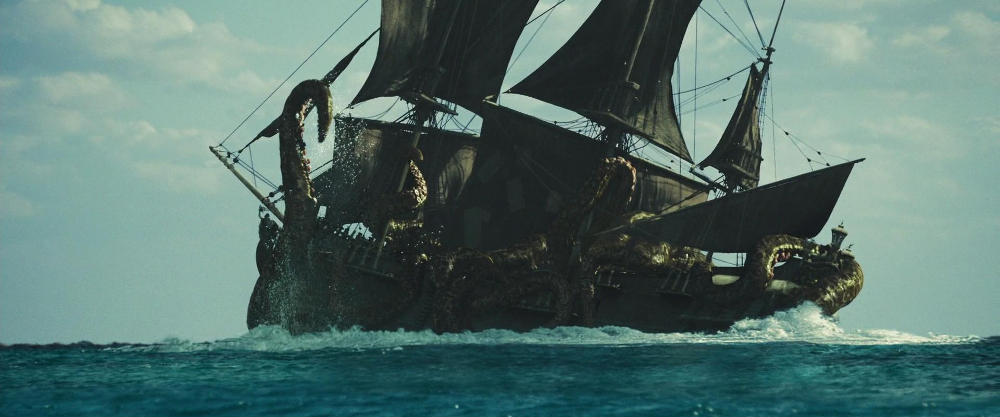
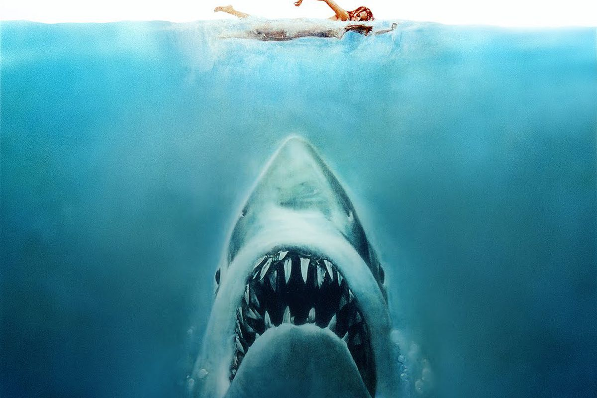
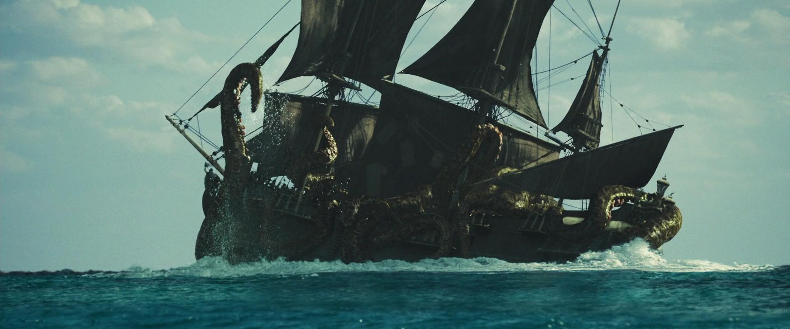
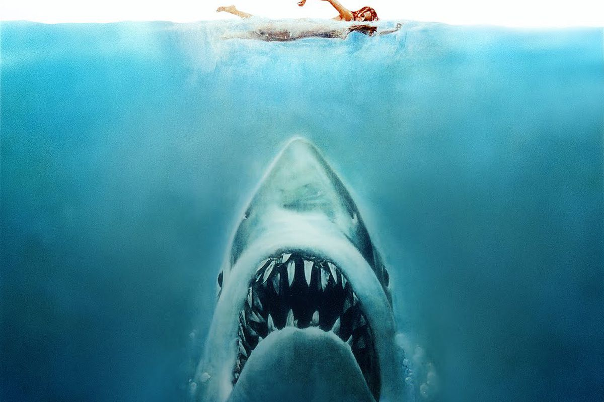

Légi szörnyek
A Tűzokádó Sárkányok, vagy más néven Drakon Ignis, ősi lények, melyek a vulkáni mélyekből születtek. Egykoron békeidőkben őrzők voltak, de egy sötét erő befolyása alá kerülve most veszélyes fenyegetést jelentenek. A Tűzokádó Sárkányok hatalmas, tűzvörös pikkelyekkel borított lények, hosszú nyakukon hatalmas fejük van, melyből hatalmas tüzet okádhatnak. Szárnyaik erőteljesek, repülés közben lángokban állnak, és a repülési sebességük rendkívül gyors.A Drakon Ignis rendkívül veszélyes, nem csak fizikai erejében rejlik, hanem a képességében is, hogy tűzgömböket okádjon. Ezenkívül intelligensek és stratégikus gondolkodásúak, ami tovább növeli a veszélyüket. Az elpusztított területek tüzekkel borítva maradnak, és a túlélőknek nehézkes lesz a talpra állás.
Griffin: A griffin-ek olyan lények, amelyek a sas és az oroszlán keverékéből születtek. Ezen mítoszok szerte a világban megtalálhatók, és a griffin-ek erőt, bátorságot és nemes lelkületet szimbolizálnak. Ősi idők óta a griffin-eket különféle kultúrák védőszentjeiként vagy királyi szolgálattevőként tisztelik.
A griffin hatalmas teste az oroszlán és a sas vonásait ötvözi. Az oroszlán testének erős izmai és melengető szőrzete található, míg a feje, szárnyai és karmai a sas éles vonásait mutatják. Az éles karmok és fogak mellett a griffin hatalmas szárnyai lehetővé teszik számára, hogy nagy távolságokat repüljön, ami páratlanul hatékonyá teszi a ragadozó vadászatban.
A griffin-ek intelligens és ragadozó lények, akiket sok helyen a királyi családok szolgálatában alkalmaznak. Kiváló vadászok és harcosok, akik az égben is veszélyesek tudnak lenni. A harcban az erőjük és sebességük páratlan, és szárnyaik révén stratégiai előnyhöz jutnak. Általában nem agresszívak, de ha veszély fenyegeti, vagy ha megtámadják, hihetetlen harci képességeiket vetik be. A griffin-ek megtalálhatók vadon élőként, de egyes kultúrákban háborúságokban vagy különleges kiképzésben is alkalmazzák őket, így jelentős veszélyt jelenthetnek azokra, akik szembekerülnek velük.
Szárazföldi szörnyek
A vérfarkasok olyan lények, akiket a farkasemberek és a vérfarkas legendái ihlettek. A farkasemberekre jellemző átváltozásokat és az emberi és farkas jellemzők keverékét hordozzák. Általában a kísérteties holdfény és a rémisztő sötétség közötti átmenetekkel kapcsolják össze őket.
A vérfarkasok a farkasemberek emberi és farkas vonásait vegyítik. Emberi formájukban általában vonzó és szép, de szemeik mély vörös színűek, ami a vérfarkas átváltozás közeledtét jelezheti. Átváltozás során testük megnő és szőrzet borítja be őket, karmaik és foguk élesen kivehetővé válnak. Szinte hihetetlen sebességgel és erővel rendelkeznek, és érzékeny farkasként képesek észlelni a környezetüket.
A vérfarkasok veszélyesek lehetnek mind az emberekre, mind más szörnyekre. Átváltozásuk során elveszítik az emberi értelem ellenőrzését, és vad, állati ösztöneik vezérlik őket. Harcban gyorsak és erőteljesek, és a harci késztetésük nem válogat. A hagyományok és mítoszok szerint a vérfarkasok elleni védekezésre ezüst fegyverek vagy különleges varázslatok szükségesek.
A koboldok kisebb termetű, tréfás és ravasz szörnyek, akiket gyakran az alvilág szolgálattevőiként vagy kisstílű tolvajokként ábrázolnak. Sok kultúrában és mesevilágban megtalálhatók, és a kisebb káosz és tréfák mestereiként ismertek.
A koboldok körülbelül másfél méter magasra nőhetnek, testük zöldes vagy földszínű lehet, és általában csúnya külsejük van. Kisebb termetükből adódóan a hagyományosan cselekvő, agilis és gyors szörnyek közé tartoznak. Ravaszságuk és képességük a tréfákra teszik őket hírhedtté.
A koboldok veszélyessége elsősorban az általuk okozott kisstílű káoszon és tréfákon alapul. Csoportosan előfordulva komoly fenyegetést jelenthetnek falvaknak vagy utazóknak. Képesek furfangos csapdákat állítani, és használni kisebb varázslatokat vagy alkimiai keverékeket is. Egyedi koboldok gyakran más, hatalmasabb szörnyek vagy sötét varázslatok alatt állhatnak, ami tovább növeli a veszélyességüket.
Vizi szörnyek
A krakenek a tenger mélyéről származó legendás szörnyek, akiknek hatalmas, csápos karjaik a hajószerencsétlenségek és tengeri katasztrófák okozói. A krakeneket sok nép hagyománya ismeri, és a tengeri mítoszok és tengerészlegendák elválaszthatatlan részét képezik.
A kifejlett kraken hatalmas mérete miatt felér egy kis szigettel. Testét hatalmas, ragadozó szemek és hosszú, csápos karok borítják, amelyek a mélyből előbukkanva hajókat csavarhatnak meg és tengerészeket sodorhatnak magukkal a mélybe. Vékony, csúszós bőre és hatalmas szája kettétöri a hullámokat, miközben fején hatalmas agytekervények találhatók, amelyek furcsa intelligenciát sugallnak.
A krakenek hihetetlenül veszélyesek mind a hajók, mind az emberek számára. Képesek az áldozataikat elnyelni vagy eltemetni, és a mélytengeri rejtekükből váratlanul támadhatnak. Hatalmas karjaik és kiváló úszóképességük miatt a víz mélyén képesek gyorsan manőverezni, és a hajókat félresöpörni, mielőtt azok meg tudnának védekezni.
A megalodonok a tengeri rémek közé tartoznak, hatalmas ragadozók, akik a régmúlt időkben kószáltak a tengerekben. A megalodonok egykori hatalmukat a fosszilizált fogak és csontok alapján mutatják, de sok tengerész is észlelt már olyan hatalmas árnyékot a vízben, amely a megalodonok létezését sejteti.
A megalodon a cápák királya, testhossza akár 20 méter vagy annál is több lehet. Élesen fogazott szája és hatalmas fogai révén könnyedén felszaggatja és felfalja a nagyobb méretű tengeri élőlényeket. Szürkés-fekete színű teste szinte észrevétlenül vegyül a tenger mélyével, ami lehetővé teszi számára, hogy észrevétlenül közelítse meg áldozatait.
A megalodonok rendkívül veszélyesek a tengeren navigálók számára. Hajókat könnyen megtámadhatnak, és az embereket is veszélyeztethetik, akik a vízben tartózkodnak. Nagy méretükből adódóan erőteljes harcosok, és az üldözés során képesek nagy sebességgel úszni. A megalodonokat nagy távolságokon keresztül érezhetik meg az áldozataik vérét és rezdüléseit, ami lehetővé teszi számukra, hogy messzebbről észleljenek és támadjanak.